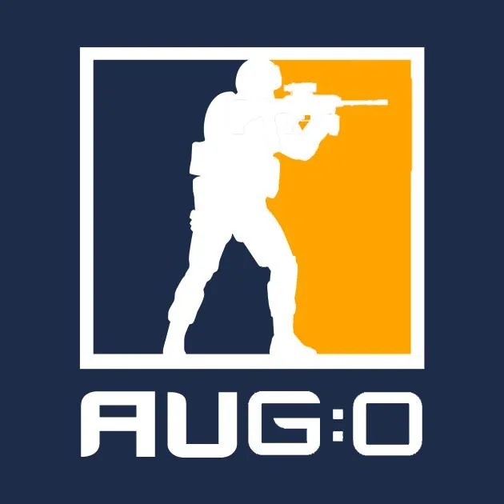

CS:GO es un videojuego de disparos en primera persona (FPS) en equipo, lanzado por Valve Corporation en agosto de 2012. El juego enfrenta a dos equipos —Terroristas y Contraterroristas— en escenarios donde deben cumplir objetivos como colocar/desactivar bombas o rescatar rehenes. Con el tiempo, CS:GO se convirtió en uno de los pilares de los eSports debido a su jugabilidad táctica, su alto techo de habilidad y su comunidad global.
El desarrollo de CS:GO fue realizado por Valve Corporation en colaboración con el estudio Hidden Path Entertainment. Valve es la compañía responsable de toda la serie “Counter-Strike” y de la plataforma Steam, lo que ayudó a posicionar el juego no solo como título de entretenimiento sino como fenómeno competitivo.
En los últimos años, CS:GO ha experimentado actualizaciones y mejoras importantes. Por ejemplo, se ha filtrado información que apunta a una migración del motor gráfico a Source 2 para CS:GO, lo cual implicaría mejoras de rendimiento y visuales. Además, en 2025 se detectaron líneas de código que podrían indicar el regreso del modo “Retake” y la introducción de nuevos tipos de “cases” o cajas de objetos dentro del juego.